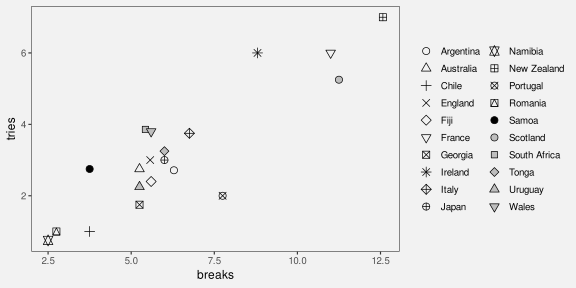
12 Visual Objects
Figure 12.1 shows a scatter plot of the number of clean breaks and the number of tries for countries at the 2023 Rugby World Cup (Table 9.1). This data visualisation is similar to Figure 9.3, but it adds an extra mapping. Country names are encoded as the shape of the data symbols. This is a reasonable mapping, despite the large number of different countries, because each different shape only appears once. We are able to distinguish all countries from each other and, thanks to the legend, we can identify individual countries.
Figure 12.2 shows another scatter plot of the number of clean breaks and the number of tries for countries at the 2023 Rugby World Cup, but this time with flags as the data symbols. In one sense, this is just a variation on Figure 12.1 because the country names are encoded as the shape of a data symbol. Each data symbol is a shape that allows us to distinguish between the different countries.
The difference between the data symbols in Figure 12.1 and the data symbols on Figure 12.2 is that the flags are not only more complicated shapes, but they are familiar shapes. The flags convey differences, but they also convey the more sophisticated concept of the country names. In the terms of Section 2.2, the flags are visual objects that might take longer to process, but convey more information.
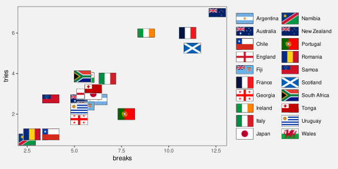
12.1 Learned mappings
We encode data values as visual features so that the viewers of a data visualisation can decode the data values from the visual features (Figure 3.6).
In Section 7.1, we saw that some encodings are effective because there are implicit decodings. For example, a longer bar in a bar plot naturally corresponds to a larger quantity. Basic visual features, like length, are effective thanks to pre-existing decodings that are built-in features of our visual system.
Part of the power of visual objects also comes from pre-existing decodings. However, these decodings are learned rather than being built-in. In some cases, we are able to decode values from a visual feature based on prior experience and learning, rather than due to an implicit encoding (Figure 12.3).1
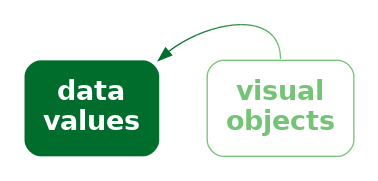
For example, Figure 12.4 shows three coloured circles. Without any explicit encoding, we can decode the red circle as “stop”, the orange circle as “slow”, and the green circle as “go”. This is not a decoding that we are born with; it is a decoding that we learn through experience.
The flags in Figure 12.2 provide examples of learned decodings. We associate each flag with a particular country because we have seen these flags before and they have learned the decoding from flag to country. Figure 12.5 demonstrates this point by repeating the scatter plot, but removing the legend. We are still able to identify not only that the data symbols represent different countries, but we can identify (at least some of) the country names as well.
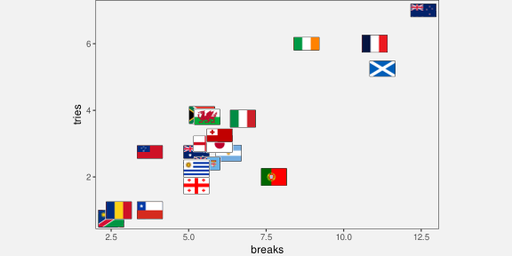
Just to make the point completely clear, Figure 12.6 shows Figure 12.1 without a legend. Although we can still perceive that the data symbols are different from each other, there is nothing about the shape of the data symbols in Figure 12.6 that conveys the country names. We can clearly see that Figure 12.5 contains more information than Figure 12.6.
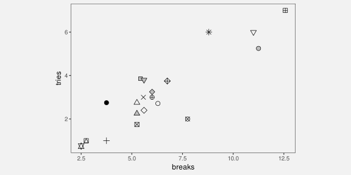
A plot that uses visual objects as data symbols can be effective because the visual objects can convey information based on learned decodings.
Figure 12.5 also demonstrates a weakness of visual objects. The flags work well for identifying the country names only if we are familiar with all of the different flags. For example, it may only be Australians and New Zealanders who can reliably identify the difference between their two flags.
A plot that uses visual objects as data symbols may not be effective if the learned decodings have not been learned by all viewers.
12.2 Case study: Choropleth maps
Figure 12.7 shows a choropleth map of the average crime rate, over the period from 2011 to 2021, in each police district of New Zealand.2 The data values for this map are shown in Table 12.1.
| district | rate |
|---|---|
| Auckland City | 0.32 |
| Bay of Plenty | 0.62 |
| Canterbury | 0.38 |
| Central | 0.56 |
| Counties/Manukau | 0.39 |
| Eastern | 0.66 |
| Northland | 0.61 |
| Southern | 0.49 |
| Tasman | 0.62 |
| Waikato | 0.46 |
| Waitematā | 0.28 |
| Wellington | 0.33 |
The data symbol in Figure 12.7 is a polygon representing the geographic boundary of each police district. This implicitly entails an encoding of a police district as the position of a polygon. Crime rate is encoded as the fill colour of each polygon.
The use of polygons as data symbols is effective because the polygons form familiar shapes with familiar spatial arrangements (familiar to a New Zealand audience at least). The polygons are visual objects that convey the concepts of districts within New Zealand. The spatial arrangements are also a form of visual congruence; the arrangements mirror the real-world spatial relationships between the regions (see Chapter 7).
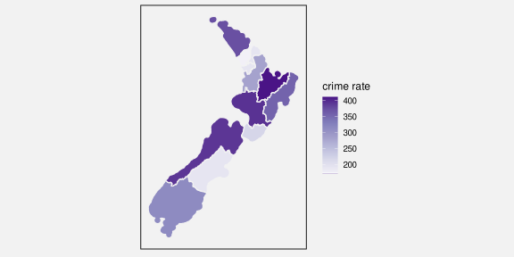
A choropleth map is effective because it maps geographic regions to familiar visual objects that resemble the real world regions.
A weakness of Figure 12.7 is that it encodes the quantitative crime rate as colour (chroma and/or luminance). This means that we can only decode ordinal comparisons between regions (see Section 6.2). For example, we can see that the highest crime rate occurs in the district to the east of the North Island, but it is difficult to perceive how much higher that crime rate is compared to the next highest crime rate.
A choropleth map is only effective for making ordinal comparisons between geographic regions because it encodes quantitative values as colour.
Figure 12.8 shows a bar plot of the same data, which demonstrates the advantages and disadvantages of the choropleth map in Figure 12.7. In Figure 12.8, it is much easier to compare the crime rate values because crime rates are encoded as bar length. However, it is much harder to associate the different regions with their spatial arrangements because all we have are the region names. Each police district is encoded as the vertical position of a bar, with no correspondence to the spatial arrangement of the regions in the real world.
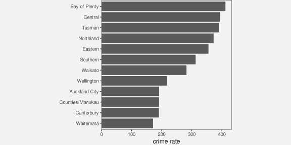
Another potential weakness with choropleth maps is the fact that regions differ in terms of area. We know from Section 7.3 that larger data symbols are associated with larger data values. The larger polygons accurately reflect the fact that some police districts are geographically larger than others, but there is potential for larger polygons to be erroneously decoded as larger crime rates.
Two alternative approaches are shown in Figure 12.9. These both retain the region shapes of the map, but map crime rates to the area of circles or the length of bars. These data symbols have a spatial arrangement that corresponds to the real-world arrangement of police districts and they provide a better decoding of crime rates from data symbols compared to the colours in the choropleth map (although area is still not the most accurate visual feature and the lengths are unaligned; see Section 3.5).
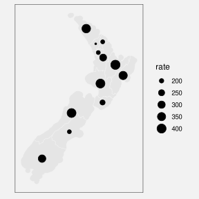
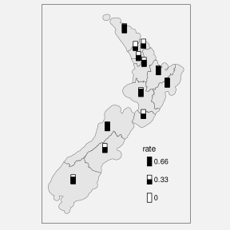
12.3 Chart junk and clutter
Figure 12.10 shows a version of Figure 12.7 with two cartoon villians added in the top-left and bottom-right corners.3 These sorts of annotations are often, derisively, referred to as chart junk, with the suggestion that they add no value and make it harder to extract the important information.4

The cartoon villians are an example of visual objects. They (crudely) convey the concepts of crime and criminals. However, they are not data symbols because there is no mapping from the raw data to the cartoon villians. Their position is unrelated to the data, their colour is unrelated to the data, and their size is unrelated to the data. The best that can be said is that they relate to the metadata, the general topic of the data visualisation. Annotations like this are closer in purpose to labels (see Section 13.3).
In Section 2.5 we learned that we should keep things simple and only present visual changes that correspond to changes in the data. In Section 2.6 we learned that our attention is drawn to the larger and brighter items within an image. The cartoon villians are relatively large, complex, and colourful and bear no connection to the raw data, so there is a good chance that they will distract from the visual features that do convey data values.
Chart junk is not effective because it is impossible to decode data values from chart junk (no data values have been encoded) and because chart junk distracts from the visual elements that do represent data values.
However, it is important to point out that not all visual objects are chart junk. For example, the data symbols in Figure 12.10, the map regions, are also visual objects, but they differ from the cartoon villians because they are related to the data values.
Furthermore, visual objects that have no connection to the raw data may still have some positive effects. For example, the cartoon villians are not devoid of information; they convey the concept of crime more dramatically than the simple text label “crime rate”. The more complex and interesting images may attract attention to the data visualisation as a whole and there is some evidence that such annotations improve the memorability of a data visualisation.5
Chart junk can be effective because it has a greater emotional impact and is more memorable.
Overall, visual objects that are not related to data values are not effective for decoding data values, so any other benefits have to be weighed against that cost.6
12.4 Case study: Pictograms
Figure 12.11 shows a pictogram of the number of pet dogs and pet cats globally.7 The data symbols in this plot are images, or icons, of a cat and a dog, with the number of pets encoded as the height of each icon.8 Icons are an example of visual objects; they are effective at conveying categories because they visually resemble physical objects, in this case, cats and dogs.
Unfortunately, because the cat and dog images are not simple shapes, it is harder to accurately perceive the heights of the images, so it is harder to decode the number of cats and dogs. Even worse, we actually perceive the size, or area, of the images. The dog image is wider than the cat image so the number of dogs is visually over-emphasised.
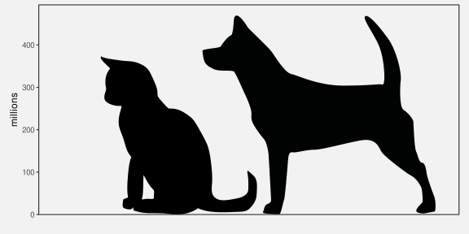
Figure 12.12 shows two alternative uses of icons that attempt to resolve some of the problems in Figure 12.11. In Figure 12.12 (a), the images are distorted so that they have the same width and so that only the height of the images changes. There is also a bar to help with the perception of length. While the bar makes it much easier to decode the number of pets, the distortion is not effective because it hinders the perception of the icon.
Figure 12.12 (b) uses a bar to represent the number of pets and just has a small version of the icon at the base of each bar. We know that the bar is effective for decoding the number of pets and the small icons are effective as labels for the bars.
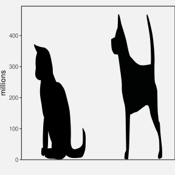
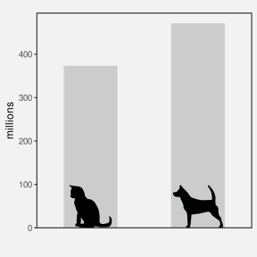
Figure 12.13 shows two more alternatives to Figure 12.11. Figure 12.13 (b) is just a standard bar plot. We know that this is effective for decoding the number of pets.
Figure 12.13 (a) uses repetitions of the icons to represent the number of pets, still within a bar. In this case, each icon represents 100 million pets. The ability to count icons is effective for decoding the overall counts.9
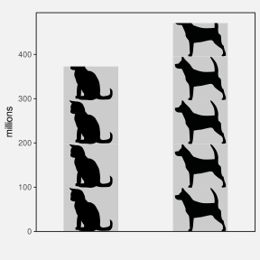
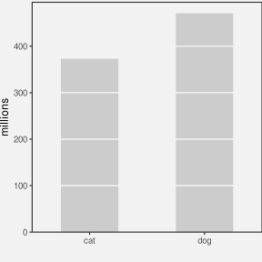
12.5 Case study: Chernoff faces
Figure 12.14 visualises the 2023 Rugby World Cup data (Table 9.1) using Chernoff faces.10 The data symbol in this visualisation is a little unusual; each country is represented by a combination of circles, curves, and lines that together produce a visual object that resembles a face. The mappings in this visualisation are also a little unusual. The number of points scored is encoded as the curvature of the smile, the number of tries is encoded as the angle of the eye brows, and the number of clean breaks is encoded as the horizontal position of the eyes.
Warning: The `scale_name` argument of `continuous_scale()` is deprecated as of ggplot2
3.5.0.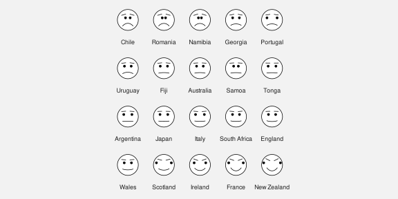
The mappings in a Chernoff face are not very accurate (see Section 3.5; curvature is ranked below colour in terms of accuracy),11 so Cheroff faces are not very effective for decoding raw data values.
However, the familiarity of Chernoff faces means that we are easily able to perceive common combinations of the facial features. For example, we can see several sad, worried faces at the top-left of Figure 12.14 and several happy, perhaps even smug, faces at the bottom-right. We can perceive countries that share similar combinations of performance measures. In other words, we can perceive multi-dimensional correlations and multi-dimensional groupings in the data.
In this case, the happier faces have been arranged to correspond to the more successful teams and the teams have been ordered from least points scored to most points scored. The resulting proximity helps with perceiving groups of similar faces.
A Chernoff face is effective at conveying multi-dimensional relationships because the data symbol is a familiar visual object from which we can easily perceive simple human emotions.
12.6 Dangers of learned mappings
Figure 12.15 provides a demonstration of the Stroop Effect.12 The task is to name the colour of each word. This task is difficult to do because there are two decodings involved and the two decodings are inconsistent. Each set of letters has a learned decoding based on the shape of the letters—the word that the letters spell out—but there is also a learned decoding based on the actual colour of the letters—the colour names that we learn as children.
One issue with relying on learned decodings is that we may learn more than one association for the same visual feature. For example, the colour red is commonly associated with hot (versus blue for cold), but also with stop (versus green for go), plus also passion, or even anger.13 Furthermore, many associations are specific to a particular culture. For example, red is associated with luck and prosperity in Chinese culture, among other things.14
Relying on a learned decoding can cause confusion if there are multiple possible decodings. It may not be clear which data value should be decoded from the visual feature (Figure 12.16).

The problem is much worse if the learned decoding(s) conflict with an explicit encoding of data values. For example, in Figure 12.2, if we use the incorrect flag for a country, for example, by swapping the Australian and New Zealand flags, we not only introduce confusion, but a misleading decoding. This is similar to the problem of dissonant mappings (Section 7.5 and Figure 7.10).
Suppose that we made a similar change to Figure 12.1, swapping the open triangle for Australia and the square-with-a-plus symbol for New Zealand. That would not cause any problem because there is no learned decoding to conflict with. We only get the problem if we swap flags in Figure 12.2 because of the conflict with learned decodings.
Employing a learned decoding incorrectly can at best weaken and at worst destroy the effectiveness of a data visualisation.
12.7 Case study: Barycentric plots (ternary plots)
Main encoding is three proportions, each to oblique axis (and at least two non-vertical and non-horizontal) => retrieval of individual proportions difficult BUT get emergent feature of position within triangle from interaction of three position encodings (Combining Mappings) => overall proportion combination retrievable IF you can decode position within triangle
Example of plot that requires learning to decode (Section 12.6).
Could do plot of Maori vs European vs Other proportions for different years?
12.8 Dangers of visual objects
One issue with more complex data visualisations is that their effectiveness depends on a larger amount of learning and experience. If the viewer does not have the knowledge required to decode a visual object, then the data visualisation will fail. We saw an example of this in Figure 12.5, where the familiarity of different country flags will vary with nationality and age, for example.
An extreme version of this problem is the use of not just complex or unusual data symbols, but entirely novel data visualisations.15
Andrews curve of RWCperGame statistics (analogue of Figure 11.2). Cite Andrews article. Can see the three distinct groups of countries more easily in this than in parallel plot, but hard to understand exactly what you are seeing. Plus NO chance of recovering original data values (another example of visualising data summary).
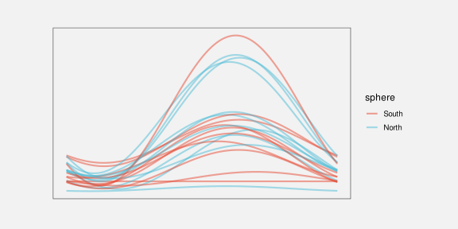
Another example of this problem are the hurrican “cones of uncertainty” that Cairo highlights in Chapter 5 of How Charts Lie (footnote!).
Mention that little is known about the accuracy of visual objects (though they must have good capacity because they are more abstract, right?)16:
12.9 Summary
If we encode data values as familiar visual objects, it becomes possible to decode more complex concepts based on prior learning and experience.
This may obviate the need for legends.
Chernoff, Herman. 1973. “The Use of Faces to Represent Points in k-Dimensional Space Graphically.” Journal of the American Statistical Association 68 (342): 361–68. https://doi.org/10.1080/01621459.1973.10482434.
Shah, Priti, and James Hoeffner. 2002. “Review of Graph Comprehension Research: Implications for Instruction.” Educational Psychology Review 14 (1): 47–69. https://doi.org/10.1023/A:1013180410169.
“Mapping Color to Meaning in Colormap Data Visualizations” Schloss et al (2018) They call this an “inferred mapping”↩︎
Add citations to MacEachren and Bertin and Dan Carr ?↩︎
Attribution for the original public domain image.↩︎
Mention Tufte (data-ink ratio), Stephen Few? see DataVis/README for links to the debate.
- “Declutter and Focus: Empirically Evaluating Design Guidelines for Effective Data Communication” Ajani et al (2021) says that “The visualization practitioner community prescribes two popular guidelines for creating clear and efficient visualizations: declutter and focus.”
Links to studies that try to show benefits of chart junk. Rahman et al (2024) Mention affect (emotion) study?↩︎
There is a really nice summary of when chart junk might be acceptable somewhere in DataVis/README↩︎
reference to Statista https://www.statista.com/statistics/1044386/dog-and-cat-pet-population-worldwide/↩︎
different terminology: icons, glyphs, pictograms Vehement opposition to these from some quarters↩︎
cite the study that reckons using icons can help with perceiving counts. More effective when each icon represents 1 (and so there are no fractional icons) ?↩︎
Link to a resource that has a comprehensive list of visual channels and includes curvature.↩︎
citation please!↩︎
Cite “Sometimes more is more: iterative participatory design of infographics for engagement of community members with varying levels of health literacy” Arcia et al (2016) where people interpret icons in multiple ways, e.g. specifically “pineapple” rather than generic “fruit”.
Also cite something about cultural differences in perception. e.g., “More of what? Dissociating effects of conceptual and numeric mappings on interpreting colormap data visualizations” Soto et al (2023)
“Review of Graph Comprehension Research: Implications for Instruction” Shah and Hoeffner (2002) Give example of ambiguous colour association “green means profitable for financial managers but infected for health care workers (Brockmann, 1991)”↩︎
“A Study on the Metaphor of “Red” in Chinese Culture” Qiang (2011)↩︎
Kosslyn’s Principle of appropriate knowledge ?
Could mention Pinker’s (1990) “graph schema” (prior knowledge about a graph type).
Shah and Hoeffner (2002) provides several examples of young students misinterpreting the message from line plots, which suggests that we need to learn how to make effective use of even basic data visualisation formats.↩︎
in general, there needs to be more explicit acknowledgement of the lack of experimental results for complex data vis scenarios. c.f., “Testing Statistical Charts: What Makes a Good Graph?” Vanderplas, Cook, and Hofmann (2020) p 71.↩︎